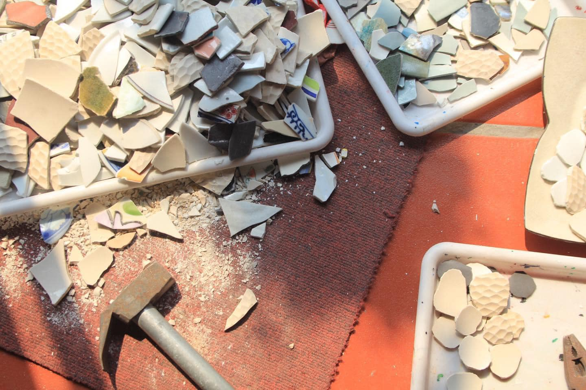
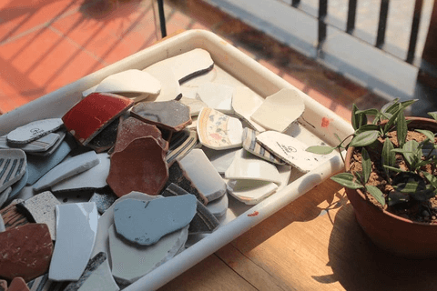
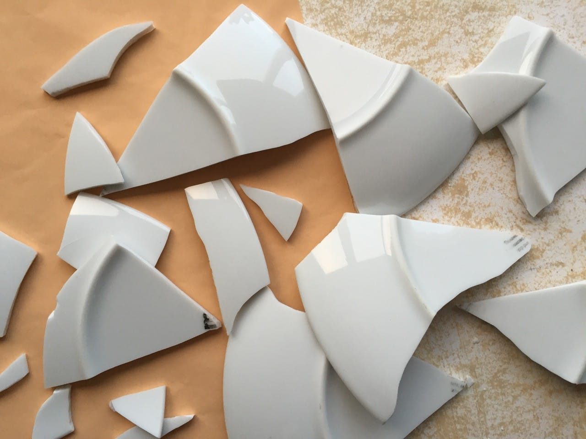
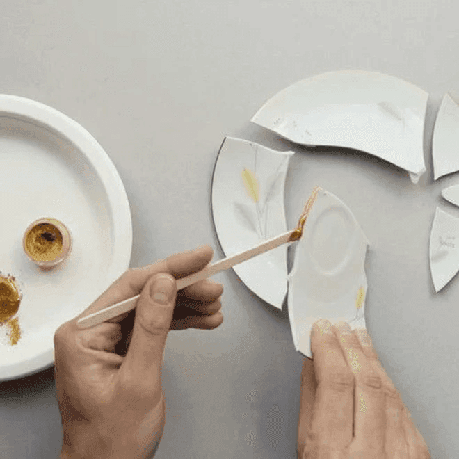
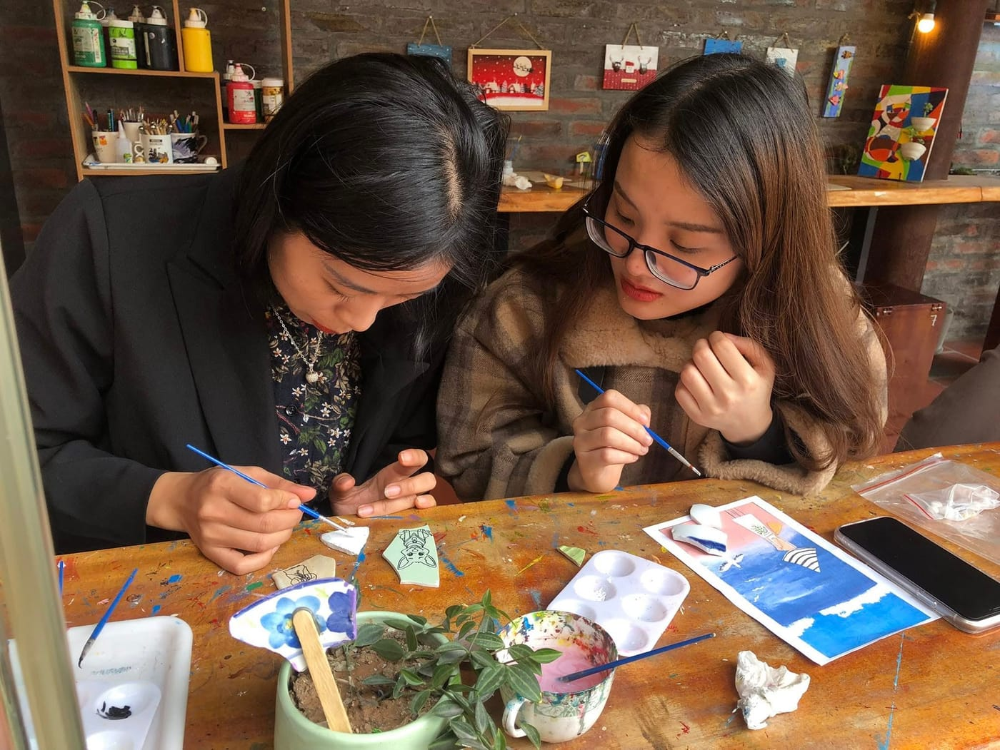
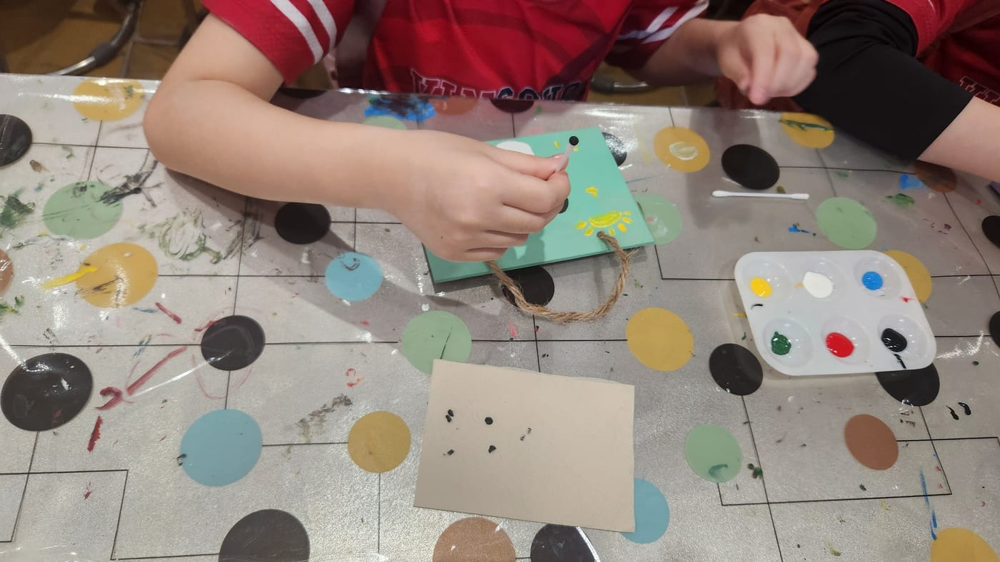

Rác thải gốm: Nhỏ bé nhưng gây ảnh hưởng lớn
Năm 2022, trong một chuyến tham quan làng nghề Bát Tràng, chúng mình nhận thấy một thực tế ít người chú ý: lượng gốm sứ bị loại bỏ mỗi ngày rất lớn. Trong quá trình sản xuất, nhiều sản phẩm có lỗi nhỏ như nứt, rạn men, méo dáng… bị gạt ra ngoài. Ngoài ra, rác thải gốm từ sinh hoạt gia đình và nhà hàng cũng chiếm khối lượng không nhỏ.
Khác với nhựa hay kim loại, gốm sứ hầu như không thể tái chế bằng công nghệ công nghiệp và cũng không phân hủy trong tự nhiên. Chúng trở thành gánh nặng cho môi trường, nằm lẫn trong bãi rác nhiều năm liền. Sau nhiều buổi bàn bạc, chúng mình quyết định thành lập Gốm Sứ Xanh vào năm 2023, với mô hình vừa thu gom vừa tái chế.



Điều gì sẽ xảy ra nếu những mảnh vỡ này được trao cơ hội thứ hai?
Những mảnh gốm phế liệu tưởng như vô tri, không còn giá trị. Nhưng khi quan sát kỹ, chúng mình thấy ở đó một tiềm năng khác. Nếu được xử lý đúng cách, gốm phế liệu có thể trở thành nguyên liệu cho một vòng đời mới. Từ câu hỏi đó, Gốm Sứ Xanh ra đời.


